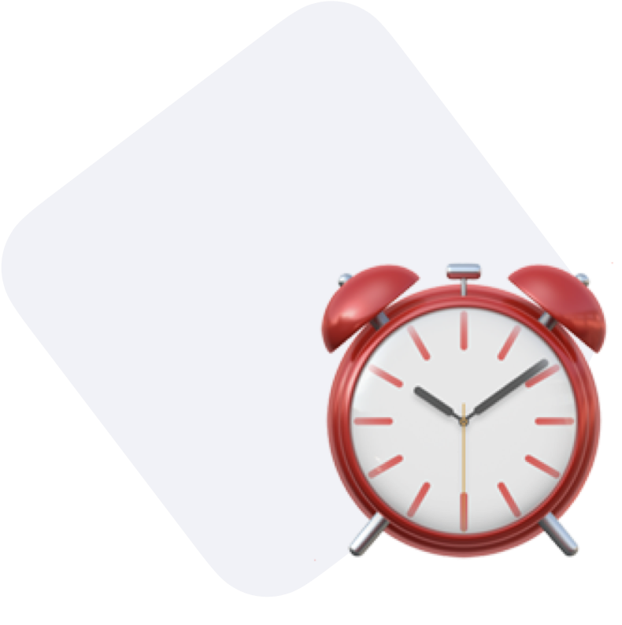

The Tracking Method Explained.
This option is not that obvious and deserves some explanations. First, let's look at the big picture. You can think of the data from your project as a stream. This "stream" consists of actions, views and identities. Vespucci will then consolidate these actions and views into a session. A session is a stock. It contains all the actions and views that are performed by an end user in a single action sequence. You can choose to define this action sequence in two different ways.
Action Based Tracking
We call the first approach Action Based Tracking, it consists in defining the session as all the views and all the tracks realized between two remarkable actions: namely "Application Opened" and "Application Backgrounded". These events are included by default in the Native Mobile Spec of Segment for a Segment based project. It is also the most accurate way to consolidate a session.

Time Based Tracking
However, it is possible that, for various reasons, your Segment integration does not include the "Application Opened" and "Application Backgrounded" tracks. This is why we introduce a second tracking method called Time Based Tracking. It consists in defining the session on the basis of a temporal criterion. Vespucci will analyze the timestamp of each of the tracks and views sent by segment and try to consolidate them into concurrent events. This approach is less precise than the Action Based Tracking.